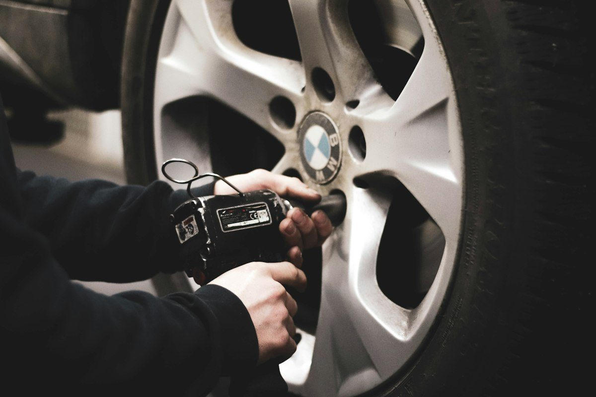

Master Precision for
ATRA Certified Rebuilds
Over 35 years of dedicated transmission mastery. Specializing in domestic, import, and heavy-duty drivetrain diagnostics, custom torque converters, and rebuilds backed by the Golden Rule nationwide warranty.
Complete Drivetrain Engineering Services
From daily commuter vehicles to heavy-duty fleet haulers, every rebuild meets or exceeds OEM specifications.
Transmission Rebuilds
Precision teardown, ultrasonic cleaning, OEM-grade clutch friction packs, upgraded planetary gears, and dyno bench testing.
Explore Rebuild Options →Computer Diagnostics
Live TCM data telemetry, solenoid actuation cycles, electronic pressure readings, and precise pinpointing of electrical vs mechanical faults.
View Diagnostic Procedures →
Drivetrain & Converters
Torque converter remanufacturing, heavy-duty furnace brazing, transfer case overhauls, differentials, and performance clutch kits.
Learn About Drivetrains →Honest Diagnosis. Guaranteed Precision.
Too many transmission shops jump straight to recommending a complete replacement when all a vehicle needs is an external solenoid, a speed sensor, or a valve body service. At Dr. Fred's Transmissions, our philosophy is anchored in transparency and master diagnostic integrity.
- ATRA Certified Member: Adherence to strict industry ethics and standardized rebuild specs.
- Free Local Towing: Available with major rebuild and overhaul packages in Spring & North Houston.
- Nationwide Warranty: Drive with peace of mind knowing your transmission is covered coast-to-coast.
- State-of-the-Art Tooling: Ultrasonic parts washers, dynamometers, and computerized fluid exchangers.
